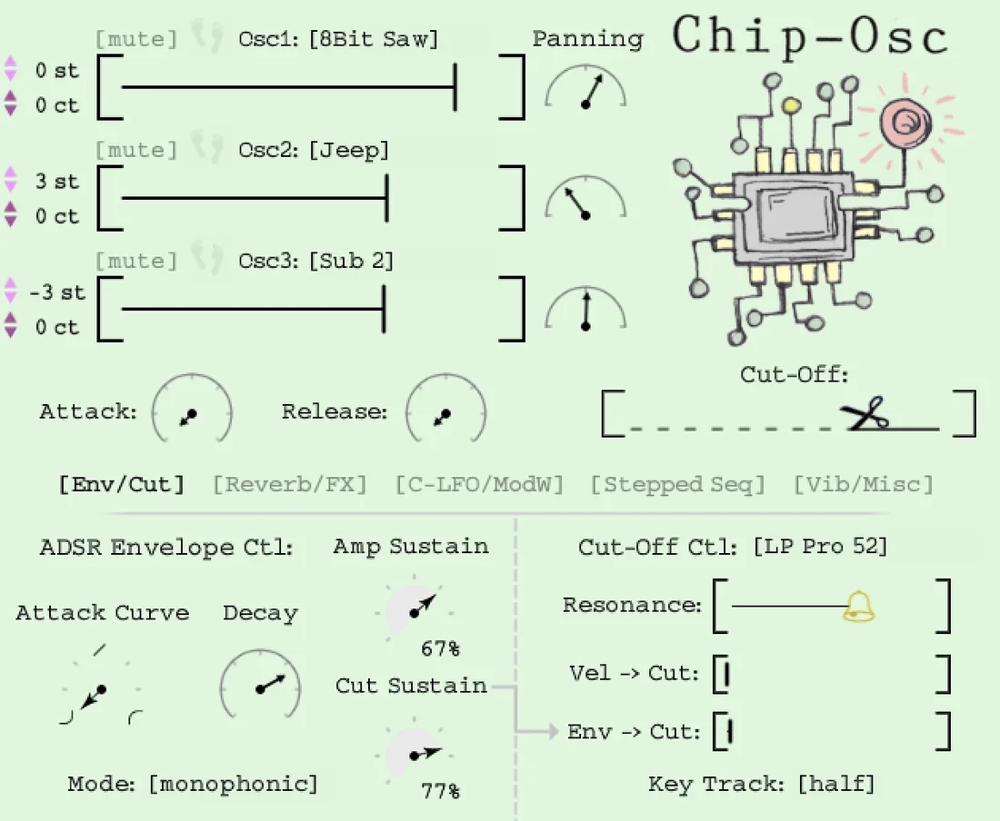
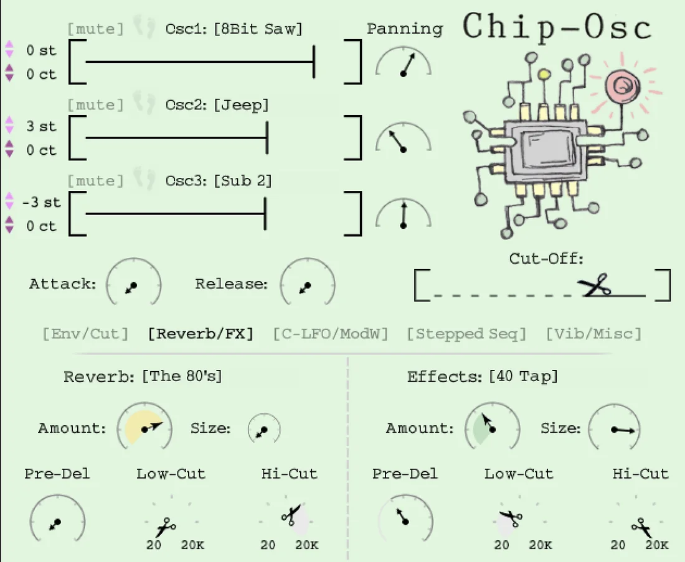
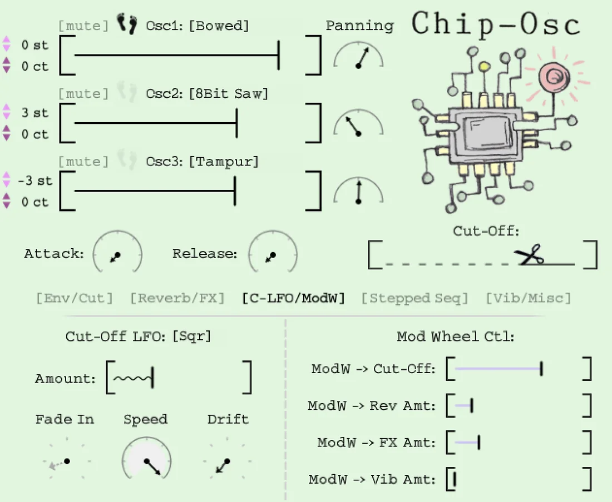
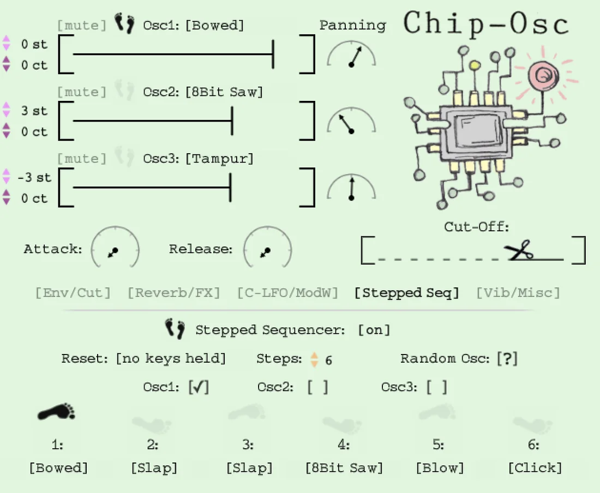
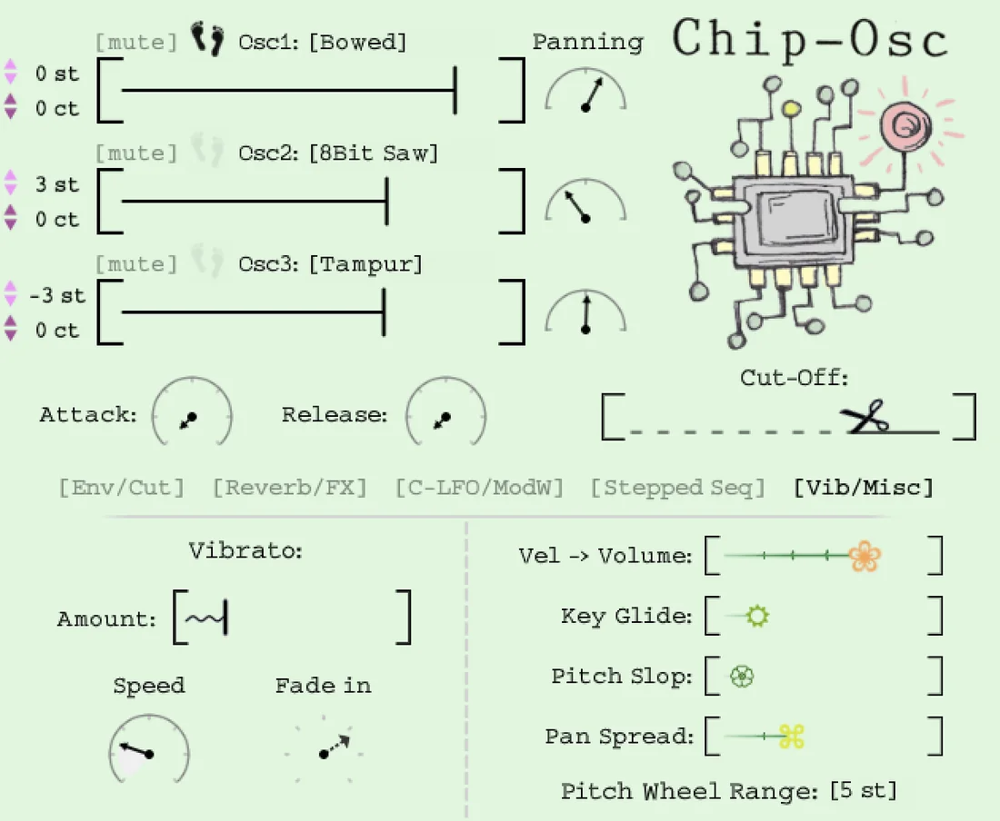

Osc Collection のチップチューン
Chip‑Osc
デジタル・ハイブリッド・シンセ。8ビットから不気味な音まで。
デジタル・ハイブリッド・シンセの生のオシレーターから作り、手描きのインターフェースに収めました。定番のチップチューンから、深くダークなシネマティック・サウンドスケープまで。無駄のない手作りのプリセット81種。
5つすべてなら Osc Collection（99ドル）で。初めての方は、まず DEM-Osc を無料で。
- 無料の Kontakt Player で動作
- macOS・Windows
- プリセット81種、無駄なし





Chip‑Osc から届く、
本物のサウンド。
4つのプリセットとフルトラック。下のサウンドはすべて Chip-Osc だけで作りました。
サウンドをタップ。ストリーミング再生なので、ダウンロードは不要です。
見た目はかわいい。でも、聴けばわかる。
ノブはすべて手描き。その下で鳴っているのは本物のデジタル・ハイブリッド・シンセで、波形をひとつずつサンプリングし、本物の空間に通しています。
「このサウンドは本気だ…すごく気に入った。」
その中身
- 20
波形を、3つ同時に
3つのオシレーター・セレクターには、それぞれデジタル・ハイブリッド・シンセから集めた20のデジタル波形。オシレーターごとにピッチとパンも設定できます。
- 30
コンボリューション空間を内蔵
お気に入りのアウトボード・リバーブとユーロラック・エフェクトを通したクロス・シンセシス：リバーブ15種と FX 15種で、あなたの音を畳み込みます。
- ↻
ひとひねりあるステップ・シーケンサー
ノートが来たときだけステップが進み、ノートごとに読み込む波形を切り替えて、メロディやコードに命を吹き込みます。
- ∿
カットオフ LFO と、モジュレーション・ホイールのコマンドセンター
形の豊富なフィルター専用 LFO に加えて、多くのパラメーターを一度にモジュレーション・ホイールへ割り当てられるコントロールセンター。
- ≈
ビブラート、グライド、スロップ、スプレッド
スピードとフェードイン付きの定番ビブラートに、ポリフォニック・グライド、ピッチ・スロップ、パン・スプレッド。すべてを生き生きと、人間らしく保ちます。
Chip‑Osc の動きを見る。
Chip-Osc をもっと詳しく：チップチューンのリードからダークなシネマティック・パッドまで。YouTube で開く ↗
中身のすべて。
主な機能
- 手作りのプリセット81種、無駄なし
- デジタル・ハイブリッド・シンセから20のデジタル波形
- 30のカスタム・インパルス・レスポンス（リバーブ15種＋ユーロラック FX 15種）
- ノートでトリガーするステップ・シーケンサー
- カットオフ LFO、ビブラート、ピッチ・スロップ、ポリフォニック・グライド
- NKS 完全対応：Maschine と Komplete Kontrol
動作環境
- Native Access でインストール・ダウンロード
- 無料の Kontakt Player（6以降）、製品版 Kontakt 6・7、Komplete Kontrol、Maschine 2 で動作
- macOS・Windows
プロデューサーに愛されて。
- ★★★★★
「これらのシンセが音楽制作にもたらすクオリティ、サウンド、そして純粋な喜びは、本当に新鮮。この10年で最高の掘り出し物。」
- ★★★★★
「本物のアナログサウンド。グラフィックもデザインも一流で、プリセットは音の探求の素晴らしい出発点。間違いなく愛情のこもった作品。」
Chip-Osc を作っているのは、私たちふたりの小さなソフトウェア会社、Clay and Kelsy Instruments です。音楽を作り続けるために必要な楽器とツールを、自分たちで作っています。私たちの音楽は200万回以上ストリーミングされ、楽器は1万回以上ダウンロードされています。
Kontakt を持っていないと使えませんか？
いいえ。Chip-Osc は無料の Kontakt Player で動きます。Native Access でインストールしてください。
対応 OS は？
macOS と Windows に対応。Maschine と Komplete Kontrol 向けに NKS に完全対応した Kontakt 音源です。
中身は？
20のデジタル波形を持つ3つのオシレーター、30のコンボリューション空間、ノートでトリガーするステップ・シーケンサー、そして手作りのプリセット81種。8ビットのチップチューンからダークなシネマティックまで。